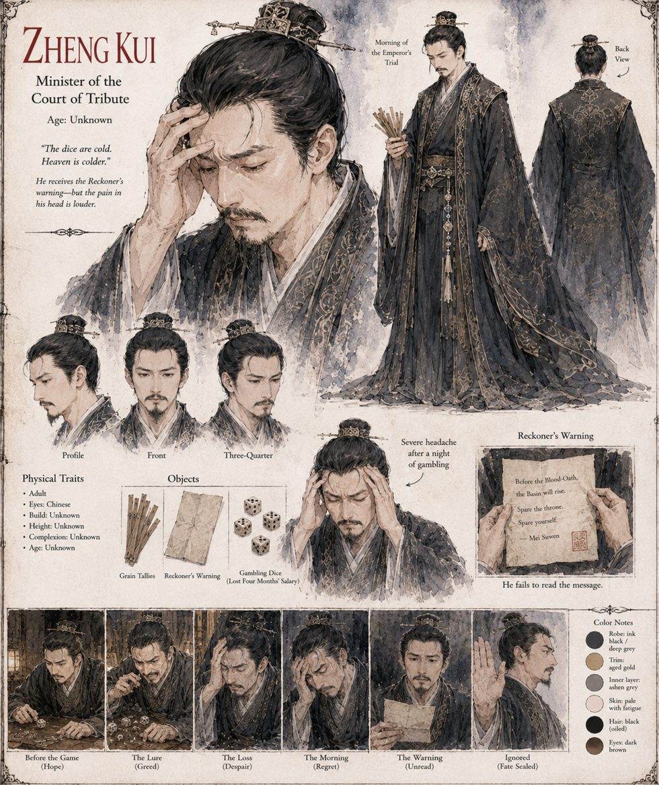

Zheng Kui
Minister of the Court of Tribute
Minister of the Court of Tribute, whose office receives more urgent correspondence in an average week than any three clerks could read in full, and has settled into an unwritten triage: sorted by the sender's rank rather than the report's contents. It is a system that reliably places a woman with no formal title beneath the grain tallies of ministers who outrank her.
On the morning of the Solstice Trial, Mei Suwen's final written warning arrives at the tail end of a night he never once discusses for the rest of his career, having lost, by his own accounting, four months' salary at dice to a pair of provincial tax assessors he remains almost certain had been cheating him. He files it unread. It is a lapse that costs the empire a good deal more than four months' salary, and he spends what remains of his life failing to mention it to anyone.
“The dice are cold. Heaven is colder.”